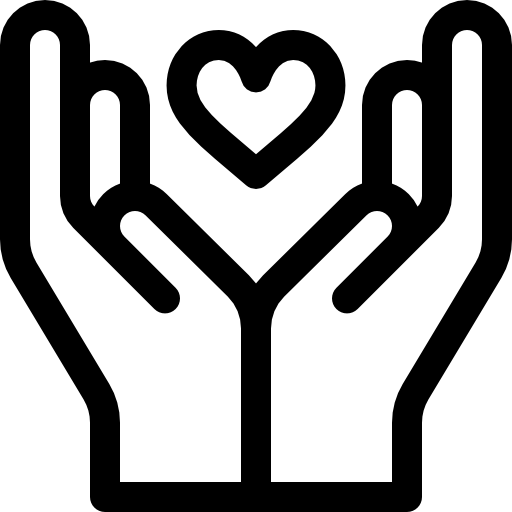

Curriculum
Datos personales
- Nombre: Ruben Dario Florez Rojas
- Dirección: Calle del Marqués de Montortal 65
- Teléfono: +34 633 63 86 76
- Correo electrónico: rubenrrojas1221@gmail.com
- Nacionalidad:Colombiana
Habilidades

- Paquete Office y Google Workspace
- Nivel de inglés B2 – Francés A2
- Comunicación efectiva y trabajo en equipo
- Organización y gestión de tareas
Otros datos de interés

- Carnet de conducir B y vehículo propio
- Disponibilidad para viajar
- Interés en desarrollo profesional en gestión y marketing
Experiencia profesional

- Peón de obra
Valencia, España| ene. 2023 - Actulidad
Ayudante de obra blanca instalacion de pladur, limpieza de obras, pintor y más.
- Animador de fiestas infantiles
Junio 2022 – Diciembre 2022
Apoyo en campañas de redes sociales
Llevaba a cabo actividades divertidas con los niños, como pintar caras, juegos y
figuras con globos, para asegurar que disfrutaran al máximo en la fiesta.
- Monitor Infantil y Juvenil- Juniors La Paz
Valencia, España| may. 2021 - agost. 2021
Campamentos, actividades dirigidas, playbacks y organización
de grupo infantil.
- Administrador de tienda de videojuegos
Pereira, Colombia | jul. 2020 - novi. 2020
Mi tarea consistía en realizar el mantenimiento de las consolas, así como en
administrar y gestionar las horas necesarias para que el cliente pudiera
comenzar
a jugar.
- Personal de logística / MEGACON
Pereira, Colombia | ene. 2019 - marz. 2019
Organizaba los torneos de video juegos, arte y baile.
- Tutor privado de química (Particular)
Pereira, Colombia | jun. 2018 - nov. 2018
Enseñaba diversos conceptos de química a alumnos con problemas en la materia.